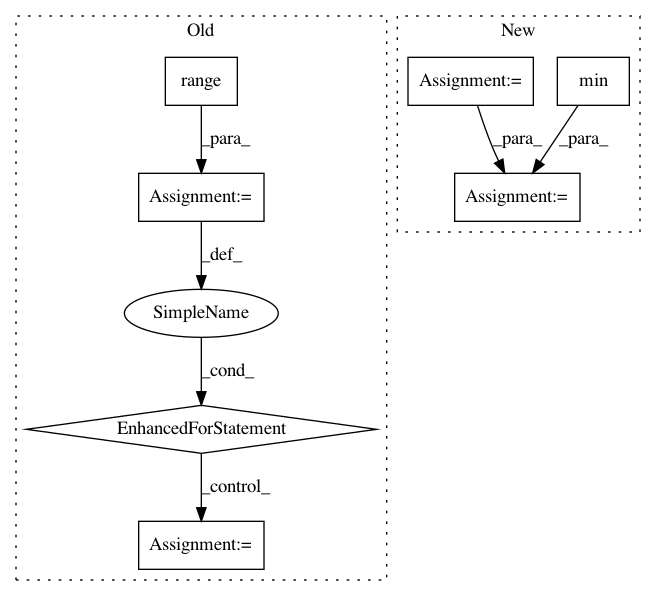

c68ec2e70731f601f630eb1816c51d7ee4ef0853,tslearn/preprocessing.py,TimeSeriesScalerMinMax,fit_transform,#TimeSeriesScalerMinMax#Any#,86
Before Change
Rescaled time series dataset.
X_ = to_time_series_dataset(X)
for i in range(X_.shape[0]):
for d in range(X_.shape[2]):
cur_min = X_[i, :, d].min()
cur_max = X_[i, :, d].max()
cur_range = cur_max - cur_min
X_[i, :, d] = (X_[i, :, d] - cur_min) * (self.max_ - self.min_) / cur_range + self.min_
return X_
class TimeSeriesScalerMeanVariance(TransformerMixin):
After Change
Rescaled time series dataset.
X_ = to_time_series_dataset(X)
min_t = numpy.min(X_, axis=1)[:, numpy.newaxis, :]
max_t = numpy.max(X_, axis=1)[:, numpy.newaxis, :]
range_t = max_t - min_t
X_ = (X_ - min_t) * (self.max_ - self.min_) / range_t + self.min_
return X_
In pattern: SUPERPATTERN
Frequency: 4
Non-data size: 7
Instances
Project Name: rtavenar/tslearn
Commit Name: c68ec2e70731f601f630eb1816c51d7ee4ef0853
Time: 2018-08-10
Author: guillaume.androz@gmail.com
File Name: tslearn/preprocessing.py
Class Name: TimeSeriesScalerMinMax
Method Name: fit_transform
Project Name: fabianp/mord
Commit Name: 407a5112ab430db6f23fc4317a7400ada797d274
Time: 2015-10-21
Author: f@bianp.net
File Name: examples/bench.py
Class Name:
Method Name:
Project Name: scikit-optimize/scikit-optimize
Commit Name: 9cdd21160f4b4352b05f7b7ce9f0f63506c585c9
Time: 2017-04-17
Author: iaroslav-ai@users.noreply.github.com
File Name: benchmarks/bench_ml.py
Class Name:
Method Name: evaluate_optimizer
Project Name: chartbeat-labs/textacy
Commit Name: eaaf2bad32af4bda1a98d434530926bb6a001230
Time: 2019-08-23
Author: burtdewilde@gmail.com
File Name: textacy/augmentation/transformations.py
Class Name:
Method Name: insert_synonyms